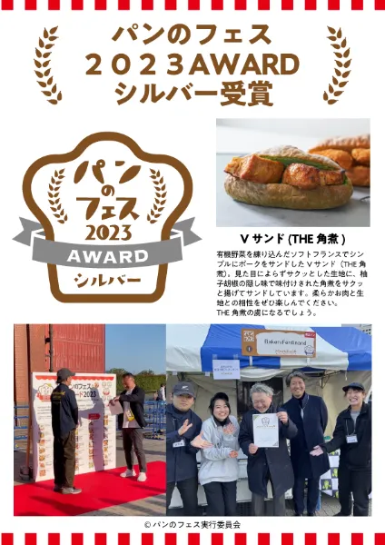
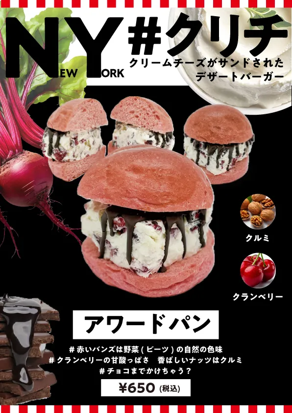

← Blog 一覧へ
【パンのフェス2025】横浜赤レンガに出店決定！🍞✨

🏆「NY#クリチ（チョコクランベリー&ナッツ）」で受賞を狙う！
2025年3月7日(金)〜9日(日)に開催される「パンのフェス2025 in 横浜赤レンガ」に、今年も出店決定！🎉
昨年の「Vサンド(THE角煮)」に続き、今年は「NY#クリチ（チョコクランベリー&ナッツ）」でアワード受賞を目指します！🏆✨

▲ 昨年のアワード受賞パン「Vサンド(THE角煮)」

▲ 今年のアワードパン「NY#クリチ（チョコクランベリー&ナッツ）」
NY#クリチ（チョコクランベリー&ナッツ）のこだわり
- #クランベリーの甘酸っぱさ
- #香ばしいナッツはクルミ
- #チョコまでかけちゃう？
- #クリームチーズがサンドされたデザートバーガー
- #赤いバンズは野菜(ビーツ)の自然の色味
- #新常識の「溶け立てパン」生地
- #口の中でとろける贅沢クリチ
- #時間と共にクリチが味変（あじへん)
- #アイスじゃないよクリチだよ
この特別なパンを、アワード受賞へと導いてください！あなたの1票が、未来の受賞パンを決める！💪🔥
🥐 パンへのこだわり
パン好きが集まるこのフェス、一切妥協はありません！💪✨
- 💛 ブリオッシュ仕立ての特製バンズ：卵とバターを贅沢に使い、ふんわりしっとり！
- 💡 新常識の「溶け立てパン」生地：冷凍しても美味しさそのまま！ふわっと溶ける食感！
時間とともにクリチの味変(あじへん)を楽しめるのもポイント！😆💖
🗳 投票の仕方
「NY#クリチ（チョコクランベリー&ナッツ）」に投票して、アワード受賞に貢献してください！1分で投票完了！🎉
エントリーパンの中からグランプリ1店、ゴールド2店、シルバー3店、ブロンズ5店、特別賞として「ぱんてな賞」1店を決定し、表彰いたします。
※受賞パンは、「パンのフェス2025 in 横浜赤レンガ」会場にて3月9日（日）に発表いたします。
- ① 1月17日（金）〜3月6日（木）18:00：投票フォームから投票
- ② 3月7日（金）〜3月9日（日）14時：会場MAPもしくは会場内QRコードから投票
※①の期間を1pt、②の期間を5ptとして集計いたします。
※同一期間に複数アドレスからの投票は1票とカウントいたします。
※投票いただいた方の中から抽選で5名様に全国パン共通券3,000円分をプレゼント！
🍞 おすすめパン・限定パン・ラスクも出品！
- 🍯 おすすめパン（定番商品）【NY#クリチ（いちじく&ナッツ）】
- 🍵 限定パン（フェス限定）【NY#クリチ（抹茶&あんこ）】
- 🥖 ラスク（フェス限定）【NY#ラスク（ジャノベーゼ・明太子)】
📢 ぜひ会場へ！当日、会場でお待ちしています！🎉🔥
🍞 パンのフェス2025 開催概要
- 📍 会場：横浜赤レンガ倉庫イベント広場
- 📅 開催日程：2025年3月7日(金)〜9日(日)
- 🎟 入場：無料エリア＆有料エリアあり